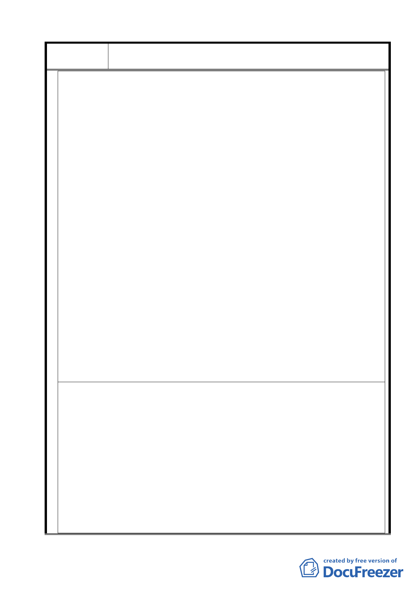

案名
變更臺北市士林區陽明山山仔后地區第二種住宅區為特定住宅區
細部計畫案
景觀等），且以「報廢資產」方式處分其名下之文化資產，實有賤賣國產之實，且有違憲法第一百四十三條之法
意。建請鈞部查明。
三、山仔后美軍眷舍在 1952 至 1958 年間 ﹐分七區散落山仔后格致路仰德大道兩邊逐漸蓋成。當時因美軍顧問團的需
要而建﹐由當時獨立於各縣市的“陽管局” 負責向當地農民強制徵收農作土地 ﹐台灣銀行負責地上物的營造﹐
委託當時省公共工程處施工。1979 年 4 月 30 日美軍顧問團關閉﹐在台駐防美軍全數撤離。其中 B 區所有權歸屬
台北縣政府﹐1994 年已拆除改建為台北縣公務人員訓練中心。 E 區所有權撥屬台銀﹐1994 決議拆除後改建為台
銀行行員訓練所。D 區則由國產局分割部份作為公共設施﹔部份標售興建高級住宅。H1 區除部份舊 ICRT 運動場
與辦公室拍賣後改建一億五千的豪宅外﹐剩餘房舍屬經建會擁有部份租于 AIT 暫用。 H2 ﹑F﹑C 區歸屬台銀﹐
部份由國人承租，部份租給 AIT 使用。
四、2005 年開始台銀對外宣稱要拍賣名下的四萬多坪美軍宿舍﹐經山仔后文史工作室至士林地政處調查原始資料，發
現所謂“台銀”與經建會 名下的前美軍社區共 67 筆地實應歸國產局所有。 因經建會所有土地的變賣﹐由國產
局處置﹐所以經建會名下的美軍宿舍區不在此申請覆查。仔細閱讀所有文件﹐屬於台銀名下的美軍宿舍區﹐原始
買賣交易者並非台銀,這些土地權是“移轉”至台銀手中﹐並無“買賣”之實。台銀只是在廢省後由 “管理者”
無端變為“所有者”;原因很清楚,台銀當時是國家銀行,省議會的決議是將 “公產”轉移給“公營銀行”, 而非
“ 私營銀行”,代表民意的省議會做此決議的原始用意,後繼執政者必須遵守,不能任意更改。
五、以此歷史淵源﹐台銀在改為法人後﹐依二次金控的政策﹐逐步走向私營之路﹐ 替全民看管土地權益的政府就應
立刻要求財政部將台銀名下的土地歸還國產局。
六、為了使金融體制與銀行制度更健全, 台銀正與其他銀行合併,台銀的土地是特殊情況由它暫管, 財政部不可任由台
銀拍賣公有土地轉變為私人銀行的資本額。一個真正忠於人民信託的政府﹐會在民營化執行前﹐迫不及待地把即
將民營的各單位名下土地收歸國產局管理﹐而非坐視公有土地在金控改革及民營化的大動作下靜悄悄地被拍賣﹐
轉變成銀行資本額後歸私人所有。一來造成台銀業務假象成長﹐二來國家財產變賣後﹐由大財團入股台銀﹐圖利
財團, 並加速貧富兩極化。
七、在‘法律’的掩蓋下, 大眾的權益就這樣被轉移給少數人。除了地上的文化資產 ,土地本身更是全國人民安身立
命所依。請 財政部國產局重視這一前政府造成的錯誤﹐即刻成立專案小組調查﹐釐清 台銀名下的前美軍宿舍群
的所有權問題﹐以免龐大的國土資產在疏忽下流失。
八、鈞部係台銀之唯一股東，基於中華民國憲法、中華民國政府皆有護國守土之義務，建請 鈞部立即將台銀不當取
得所有權之土地，劃歸國產，交由國有財產局管理，並妥善保存地上之文化資產。否則 鈞部恐有違憲、違法之
嫌，且有負全民所託。
正本 : 財政部
副本: 立法院長 王金平
立法委員 : 丁守中、田秋堇、賴幸媛、 林重謨、徐國勇、高建智、費鴻泰、蔣孝嚴、蔡正元、鄭運鵬、蕭美琴、江
昭儀、余政道、吳光訓、林炳坤、高志鵬、許舒博、陳志彬、陳金德、黃義交、黃劍輝、楊瓊瓔、劉憶如、潘維剛、
蔡其昌、羅志明、羅明才、林文郎等
財政部國有財產局、法務部、法務部調查局
台北市議會議長 吳碧珠
台北市議員：賴素如、汪志冰、吳思瑤、陳建銘、莊瑞雄、陳政忠、潘懷宗、林瑞圖、陳碧峰等。
台北市政府文化局、台北市政府都市發展局
附件 3
函
地址 : 111 台北市愛富二街二號
聯絡人 : 歐漢平
電話: 02-28612347
發文者 : 山仔后文史工作室 ; 台北市陽明山國家公園區環境改造協會 ; 財團法人綠色消費者基金會 ; 大龍峒文史
工作室 ; OURs 中華民國專業者都市改革組織 ; 國家資產搶救連線 ; 台北市民 楊祖珺 ; 台北市民 古秋
燕 ; 滬尾田野工作室 ; 高雄市民 成令方 ; 台中縣民吳東明 ; 桃園縣民 張美齡 ; 台北市民 洪致文 ; 台
北市民 蘇美雅 ;台北市民 劉民倫 ; 台灣蠻野心足生態協會等
受文者：財政部國有財產局
發文日期 : 中華民國 96 年 5 月 28 日
發文字號 : 山文室字第 960030528 號
速別 : 普通
附件 : 新聞一則
主旨：財政部國有財產局曲解法令，顯有圖利台灣銀行之嫌，應立即在 7 日內重新函覆山仔后文史工作室，否則將逕
行告發國有財產局涉嫌偽造公文書及貪瀆罪。
說明：
一、山仔后文史工作室於 96 年 5 月 7 日山文室字第 960020507 號函財政部國有財產局（以下簡稱國產局），略以台灣
28